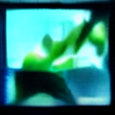

초파리 겹눈 재구성 ommatidia-like sampling
진화된 뇌 상태 96 neurons
—left luminance
—right luminance
—motion
—looming
—novelty
—brain activity
한국어 상태 해석 deterministic decoder
LIVE STATE NARRATION
모델을 불러오는 중…
이 문장은 신경망/감각 상태를 사람이 읽을 수 있게 변환한 해석이다. 초파리의 의식이나 실제 내적 독백을 측정한 것이 아니다.
Stable Diffusion 융합 기관의 최신 실제 출력 CI generation —
